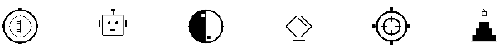

A full-stack engineer, front-end leaning, becoming a Creative Engineer, tracking the frontier of AI.
Code is my mirror, systems are my practice — this is what I earnestly do.
Decompose — Cut to the smallest actionable unit: abstraction is not simplification, it is cutting at the right seam. Build — Patterns are the crystallized trade-offs of others: understand the trade-off, not the template; judgment comes only from building. Perceive — Systems are projections of thought: where the architecture ends, the thinking ends. Act — Creation lives inside constraints: the work promises not perfection, but that it runs.
Decompose · Build · Perceive · Act
DecisionCoach — a decision trainer against over-analysis.
AI Agent × Chinese Metaphysics — BaZi and Zi Wei Dou Shu, made conversational and computable.
Agentic × 3D Creative Engineering — Web3D, generative art, and pixel animation.

The heart is still beating. Keep building.
Se1faware = self-aware. See yourself first, then build the world.